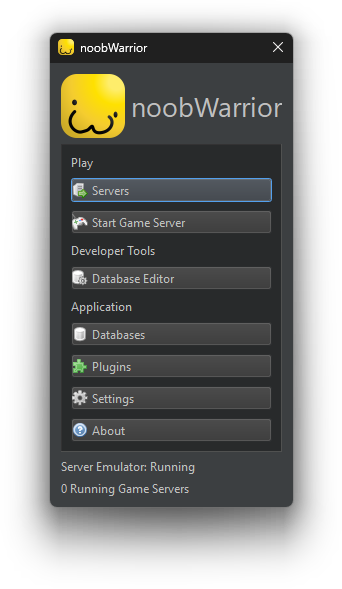

An all-in-one toolkit & decentralized platform for everyone's favorite block game

noobWarrior is a work-in-progress free (as in freedom) program that emulates Roblox's online features so that you can play Roblox games and engage in their thriving communities without being connected to the Roblox website.
It is also focused on helping developers preserve their Roblox games (or experiences as they call it.)
The philosophy of noobWarrior is simple: we want people to be able to play these games for decades without the fear of the Roblox company potentially introducing devastating game-breaking changes. Millions of people hold these games dear to their hearts, and butchering it all with little explanation or recourse is simply unacceptable to us. So let's go ahead and make a better Roblox that serves the needs of its users.
noobWarrior tries its best to not bundle in any copyrighted works by the Roblox Corporation. The program itself comes with no Roblox items or binaries of the game engine.
Where can I find a download?
There isn't a download yet. Read the red banner at the top.
How can I help you?
I'm currently looking for volunteers who possess some degree of C++ knowledge and have the same amount of interest that I have to work on this. If that's the case then contact me on Discord at @hattozo and we'll talk. I don't have a forum or professional email for development or anything like that, I'm just getting this off the ground so that's why I'm relying on Discord for now.
Alternatively, check out the git repo and explore the codebase. Send a PR if you think anything is off.
What makes this different from all the other Roblox revivals/launchers/private servers?
TL;DR: I don't focus on "old roblox," and I'm planning to add better tooling which will make it easier to create content and foster a community
Unlike most Roblox revivals, noobWarrior's primary aim is not to replicate or preserve older versions of Roblox for aesthetic value. It is pragmatic in the sense that it focuses on Roblox games first-and-foremost, not the clients. That is ultimately what people play Roblox for. The bread and circuses always win people over.
noobWarrior also plans to address a lot of the shortcomings that come from Roblox launchers. They're incredibly frustrating to set up for the average person, there are no community features whatsoever, they don't actually store local copies of the assets that the games use (they're still located on Roblox's servers, waiting to die one day,) and the ones that do store local copies do it in a way where it's a pain in the ass for anyone who wants to create their own content. Hundreds of cryptic files named after their ID's in a single folder do not make for a robust system for developers.
noobWarrior aims to take a different approach to this problem by storing all of the assets, badges, places, and metadata that comprise the Roblox game in a single self-contained database file. You share this file with others and now they're able to play your game. You edit this file in the specialized editor and now you can inspect what your game has & tinker with it.
With this feature alone, noobWarrior should have better content creation tooling than any other Roblox launcher out there. And that's not even including all the features that it's going to have. There is an entire Lua-based plugin system in the works that will allow you to extend all faucets of the program & its content, not to mention a planned Steam Workshop-esque distribution system that will allow you to share copies of your games & plugins with ease. I prioritize people creating original content over playing stolen content. You'd think for a game that's centered around user-generated content that people would try to put more emphasis on that, but nope.
Lastly, noobWarrior places a strong emphasis on community. The community system in noobWarrior will operate in a similar fashion to social networks like Mastodon - people run their own little instances and those instances can talk to other instances. So you have an interconnected network of communities that can talk to each other. What is the practicality of this? For one, it certainly addresses Roblox's (and Big Tech by extension) abysmal problem of moderation. A small group of moderators can effectively deal with a moderation problem in a smaller, tightly-knit community better than a multi-billion dollar corporation can with hundreds of millions of players.
This is a key factor of noobWarrior's resillence. noobWarrior will be built to be resillient to disruption and the decentralized model of community networking is what should prevent it from truly dying. It helps prevent severe fragmentation of the community in case one server shuts down. Although I do believe the lack of a centralized server will make the project more unapproachable to people who just want things to work, I still think this is a worthy trade-off compared to the latter outcome of leaving the entire community stranded.
There's a lot more to discuss when it comes to the technicals of how everything is architected, but that's a page for later.